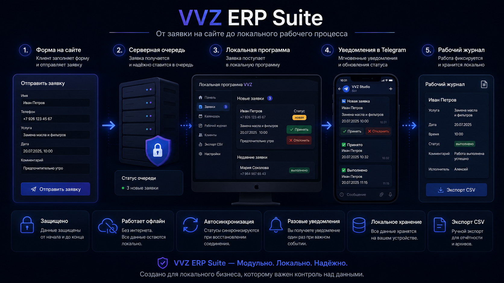

Объедините заявки, их обработку и контроль в один рабочий процесс, настроенный под ваш бизнес.

Интеграция в существующий сайт или готовое решение под ключ.
Прямая связь доступна через Telegram, WhatsApp или почту.
Один связанный процесс проводит заявку от сайта до локального журнала без набора отдельных продуктов.
Клиент отправляет заявку с данными, нужными для обработки.
Сервер проверяет заявку и ставит её в очередь передачи компании.
Локальная программа получает заявку, создаёт рабочую запись и хранит основные данные.
Авторизованный мастер получает уведомление и может подтвердить или отменить заявку, если это действие включено.
После выполнения заявка получает статус выполнена или отменена.
Локальный журнал хранит рабочую запись, а данные можно вручную экспортировать в CSV.
Один готовый движок настраивается под бизнес клиента, а не создаётся с нуля для каждого проекта.
Подключение приёма заявок и серверной части к текущему сайту после проверки его структуры.
Подготовка сайта, сервера, локальной программы, Telegram и выбранных отраслевых модулей.
Добавление модуля или связи с существующим процессом, если готовых модулей недостаточно.
Мы уточняем, как приходят заявки, какие данные нужны и какие статусы реально используются.
Готовый движок, справочники, модули и рабочие правила настраиваются под выбранную деятельность.
Проверяется вся цепочка: заявка на сайте, локальная обработка, Telegram и ручной экспорт CSV.
VVZ ERP Suite хранит основные рабочие данные рядом с бизнесом, а сервер и Telegram используются для доставки и контроля.
Основные данные и рабочий журнал хранятся в локальной программе.
Сервер хранит только то, что нужно для приёма, доставки и синхронизации заявок.
Telegram нужен для уведомлений и разрешённых действий; это не база данных.
Локальная программа должна показывать потерю связи, последнюю успешную синхронизацию и ожидающие элементы.
Статусы и ожидающие действия могут продолжиться после восстановления соединения.
Новые отраслевые модули можно подключать без замены всего движка.
Каждый сектор использует один движок VVZ ERP Suite со своими услугами, статусами и рабочими правилами.
Заявки на диагностику, ремонт или запись попадают в локальный журнал с подтверждением и итоговым статусом.
Уборка квартир, домов, офисов, после ремонта, окон и подготовка арендного жилья могут проходить через тот же локальный процесс.
Сезонные заявки, хранение и выездной сервис могут проходить через тот же рабочий процесс.
Заявки на запись и выбор услуг можно настроить со статусами, которые использует салон.
Выездные заявки, комментарии и контроль выполнения можно адаптировать под мобильную работу.
Магазины, мастерские, ассоциации и сервисные компании могут начать с нужных сейчас модулей.
Состав и цена определяются после разбора рабочего процесса, существующего сайта, нужных модулей и условий установки.
Для подключения существующего движка к простому текущему процессу с небольшими изменениями.
Для комплекта: сайт, сервер, локальная программа и нужные отраслевые модули.
Для специального модуля или внешней интеграции, если готовых модулей недостаточно.
Компоненты работают вместе как одна система приёма, доставки, локальной обработки и контроля.
Собирает данные клиента, нужные для создания рабочей записи.
Проверяет и передаёт заявки в локальную программу.
Хранит основные рабочие записи и журнал выполненных работ.
Уведомляет авторизованного мастера и может давать разрешённые быстрые действия.
Фиксирует выполненные и отменённые работы для последующего просмотра.
Позволяет экспортировать журнал и добавлять отраслевые модули.
Выберите вопрос или задайте его в форме.